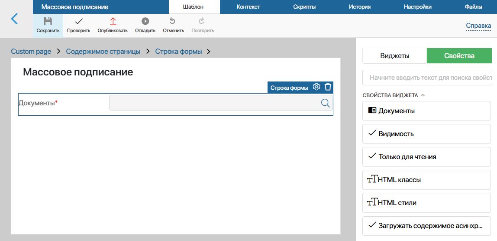
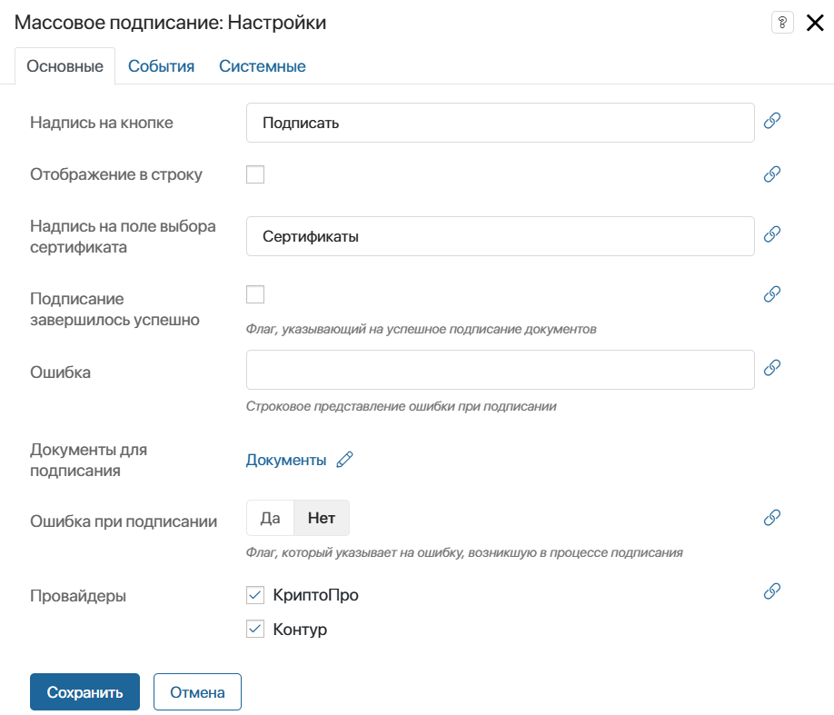
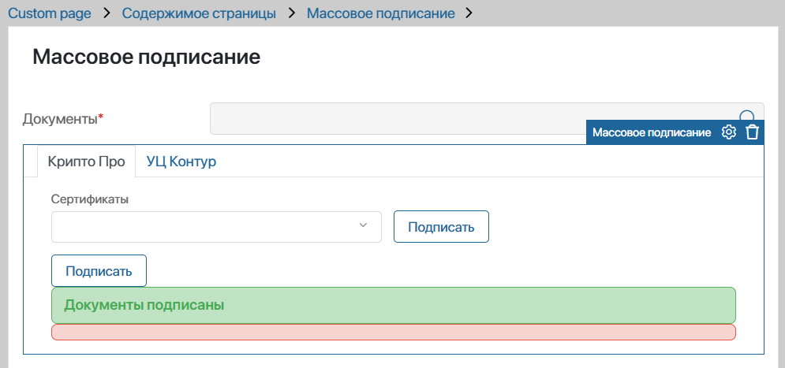
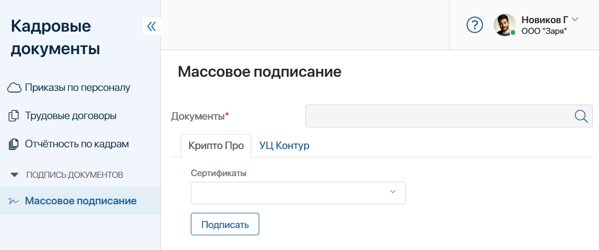
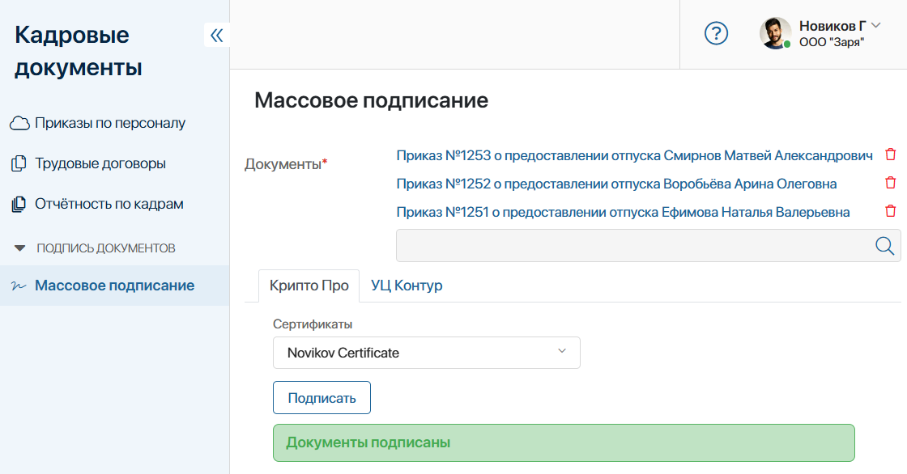
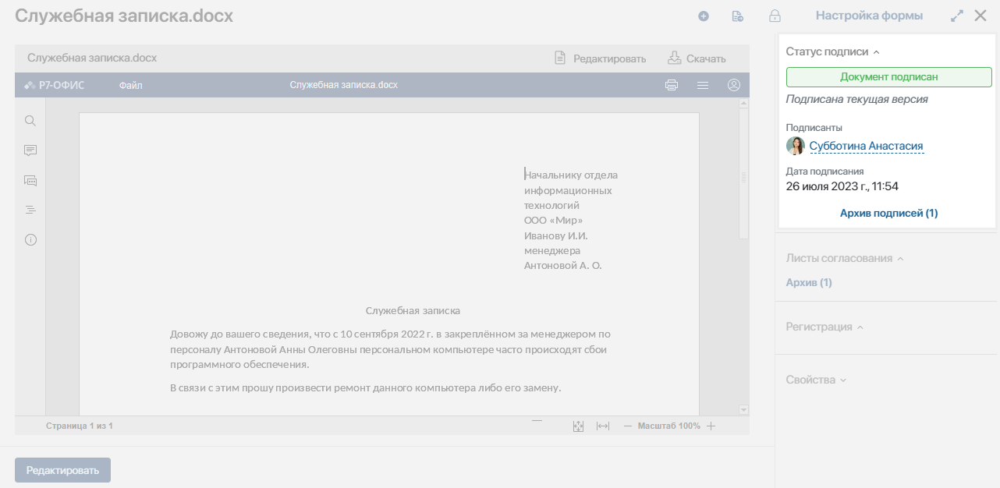

Модуль Массовое подписание позволяет выбирать и подписывать сразу несколько элементов приложения электронной подписью, поставщиком которой является провайдер КриптоПро или УЦ Контур. Вы можете работать с обоими провайдерами или только с одним из них.
В состав модуля входит виджет Массовое подписание, который можно добавить на страницы, формы приложений или задач.
С помощью модуля и входящего в него виджета вы можете ускорить документооборот, поскольку подписание нескольких документов можно будет осуществить в едином окне, выбрав сертификат для подписи один раз. Например, для работы с виджетом можно создать отдельную страницу внутри раздела, в котором происходит управление документооборотом компании. После размещения и настройки виджета сотрудники смогут перейти на страницу и подписать сразу несколько документов.
Начало внимание
Для работы модуля Массовое подписание и входящего в него виджета необходимо настроить и включить модуль электронной подписи КриптоПро или УЦ Контур.
Конец внимание
Установка и настройка модуля
- Перейдите в раздел Администрирование > Модули.
- Нажмите + Модуль, а затем Скачать.
- В открывшемся каталоге ELMA365 Store установите модуль Массовое подписание.
- Если в вашей компании используется УЦ Контур, на открывшейся странице модуля введите данные для интеграции с этим провайдером:
- Сервер Контур — адрес сервера, который предоставляет УЦ Контур при регистрации организации;
- API ключ Контур — API-ключ, полученный от провайдера.
После этого вы сможете использовать в дизайнере интерфейсов виджет Массовое подписание.
Настройка виджета «Массовое подписание»
Рассмотрим настройку виджета на примере его добавления на страницу системы:
- Откройте раздел, в котором вы хотите разместить страницу для массового подписания документов. На левой панели нажмите + Добавить, выберите Страницу, заполните настройки и нажмите Сохранить.
- Перейдите в дизайнер интерфейсов страницы. Для этого справа от названия страницы нажмите значок шестерёнки и выберите Конструктор.
- Перед началом настройки виджета Массовое подписание добавьте в контекст страницы свойство, в котором пользователь будет выбирать элементы приложения для подписания. Для этого перейдите на вкладку Контекст, нажмите кнопку + Добавить и заполните поля:
- Отображаемое имя* — название поля для выбора элементов приложения, например Документы;
- Тип* — Произвольное приложение с возможностью выбора нескольких элементов.
- Вернитесь на вкладку Шаблон.
- На правой боковой панели выберите вкладку Свойства. Разместите созданные на шаге 3 свойство в шаблоне и в открывшемся окне настроек отметьте опцию Обязательное поле.

- На правой боковой панели откройте вкладку Виджеты и перетащите на страницу виджет Массовое подписание. В открывшемся окне заполните параметры:

- Надпись на кнопке — укажите название, которое отображается на кнопке массового подписания;
- Отображение в строку — при включённой опции элементы виджета будут размещены в одну строку, а при выключенной — друг под другом;
- Надпись на поле выбора сертификата — введите текст, который будет отображаться рядом с полем, в котором выбирается сертификат для подписания;
- Подписание завершилось успешно — поле можно оставить пустым, так как оно заполняется автоматически в ходе работы с виджетом. Оно показывает успешность подписания документов. Вы можете связать поле с переменной типа Выбор «да/нет» из контекста страницы, например, чтобы использовать значение настройки в пользовательском скрипте. Для этого нажмите значок
 , затем ссылку <Не установлено> и укажите переменную;
, затем ссылку <Не установлено> и укажите переменную; - Ошибка — поле можно оставить пустым, так как оно заполняется автоматически в ходе работы с виджетом. В него записывается текст ошибки, возникшей при подписании. Вы можете связать поле с переменной типа Строка из контекста страницы, например, чтобы использовать значение настройки в пользовательском скрипте. Для этого нажмите значок , затем ссылку <Не установлено> и укажите переменную;
- Документы для подписания — нажмите значок , а затем ссылку <Не установлено> и укажите переменную типа Произвольное приложение, которая хранит список элементов для подписания. В нашем случае это переменная Документы, в которой будут содержаться элементы, выбранные пользователем на странице;
- Ошибка при подписании — поле можно оставить пустым, так как оно заполняется автоматически в ходе работы с виджетом. Оно показывает наличие ошибки при подписании. Вы можете связать поле с переменной типа Выбор «да/нет» из контекста страницы, например, чтобы использовать значение настройки в пользовательском скрипте. Для этого нажмите значок , затем ссылку <Не установлено> и укажите переменную;
- Провайдеры — отметьте, какие провайдеры будут доступны при подписании документов через виджет. Вы можете указать КриптоПро и УЦ Контур. Если выбрать оба варианта, они отобразятся для пользователя на отдельных вкладках.
- Нажмите кнопку Сохранить.
Шаблон страницы с настроенным виджетом и свойством может выглядеть следующим образом:

После выполнения всех настроек нажмите кнопки Сохранить и Опубликовать на верхней панели дизайнера интерфейсов, чтобы виджет стал доступен пользователям.
Пример работы с массовым подписанием
После размещения и настройки виджета пользователи могут подписывать сразу несколько элементов с одной страницы системы, карточки элемента приложения или задачи.
Страница с виджетом и полем для выбора документов может выглядеть так:

Массовое подписание осуществляется следующим способом:
- Если доступно больше одного провайдера электронной подписи, откройте нужную вкладку — КриптоПро или УЦ Контур.
- Нажмите значок лупы в поле Документы* и в открывшемся окне выберите приложение, а затем элемент, который необходимо подписать. Вы можете по очереди выбрать все нужные документы.
- В поле Сертификат для подписи укажите сертификат провайдера.
- При использовании УЦ Контур нажмите Получить код для подписания и введите код из SMS в появившееся поле.
- Нажмите кнопку Подписать.
Когда подписание документов завершится, вы увидите оповещение. Если произошла ошибка, она отобразится внизу страницы.

В карточке каждого подписанного элемента приложения будет отображаться информация о подписании. Обратите внимание, при массовом подписании подписываются только файлы, подпись атрибутов в этом случае невозможна.
